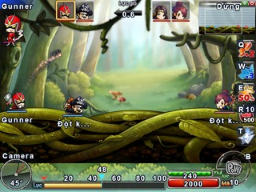

Gunny Java 7.8.1
Chơi online bằng TCP socket trên Java ME. Cập nhật cùng phiên bản client và máy chủ.
E72 / C3 · 320×240
Cài bằng JAD · 7.8.1E6 · 640×480
Cài bằng JAD · 7.8.1Thay đổi 7.8.1
- Nhấn G hoặc chạm icon Chat để mở Hiện tại và Chat mật, với tin nhắn nhanh và emoji.
- Nút Thoát ở sảnh chỉ hiện chữ khi chọn và mở hộp thoại xác nhận.
- Về PvP sau ải viễn chinh hiện đầy đủ bản đồ và các nút phòng.
- Nút cửa ở danh sách phòng về đảo và giữ đăng nhập. Nhà Online/Offline dùng để đổi chế độ.
- Shop, Túi, Tiệm rèn và Ải Viễn Chinh dùng dữ liệu tài khoản online khi đã đăng nhập.
- Tăng kích thước tia đạn Sấm Sét. Huyệt Ma Kiến có nhạc riêng cho từng ải.
Kết nối game
socket://gunnyjava.xubi.org:22122
Game dùng TCP. Web quản trị và trang tải game dùng HTTPS.



Gunny Java 7.8.1